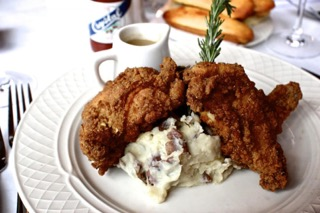

Experience the Soul of Southern Cuisine
Indulge in the flavors of home-cooked soul food made with love and tradition.
View Our MenuOur Specialties

Fried Chicken
Crispy, golden fried chicken seasoned to perfection.
Peach Cobbler
Homemade peach cobbler with a buttery crust and sweet peaches.
What Our Customers Say
"Queens of Soul is my go-to spot for delicious comfort food that reminds me of home. The fried chicken is crispy on the outside and juicy on the inside, just like my grandma used to make. And don't even get me started on the peach cobbler...it's out of this world!"Tanya W.
"Queens of Soul never disappoints. The flavors are authentic and delicious."Emily S.
"I stumbled upon Queens of Soul while visiting the area, and I'm so glad I did. The shrimp and grits were absolutely divine, and the atmosphere was so warm and inviting. I can't wait to come back!"Michael P.
Local Food Publication Reviews and Awards
Queens of Soul has received rave reviews and prestigious awards from Washington DC's top food publications.
Washingtonian Foodie Award: Best Southern Comfort Food (2023)
DC Eats Magazine: Top Pick for Authentic Soul Food (2022)
Capitol City Food Critics: Best Fried Chicken in DC (2021)
DC Eats Magazine: Top Pick for Authentic Soul Food (2022)
Capitol City Food Critics: Best Fried Chicken in DC (2021)
Keith Lee Review
TikTok food blogger Keith Lee gave us 4.5/5 stars.